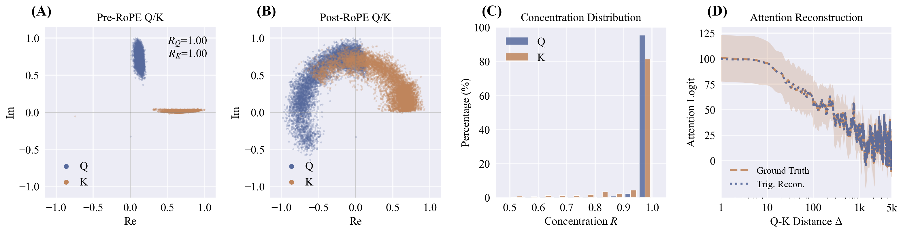
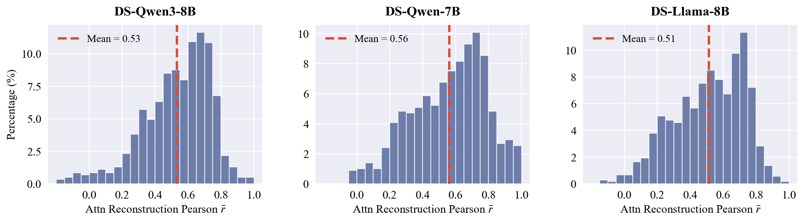
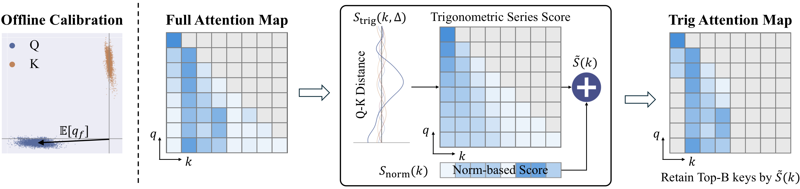
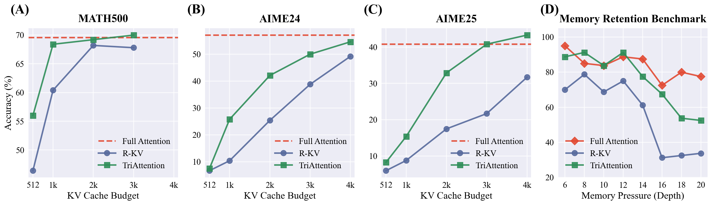

Real-World Deployment
OpenClaw + 32B Model on a 24GB GPU: From OOM to Task Complete
Running a 32B model on a 24GB GPU leaves very little room for KV cache. OpenClaw ships with such lengthy default instructions that Full Attention hits out-of-memory before the agent can even start. TriAttention compresses KV cache on the fly, letting the agent run to completion.
Throughput Gain
On AIME25 at matched accuracy (40.8%), TriAttention delivers 2.5× higher throughput than Full Attention.
Memory Reduction
TriAttention reduces KV cache memory by 10.7× while matching Full Attention reasoning accuracy on AIME25.
Peak Speedup
On MATH 500, TriAttention reaches 1,405 tokens/s vs. 223 tokens/s for Full Attention (68.4% vs. 69.6% accuracy).
Abstract
Extended reasoning in large language models (LLMs) requires long and accurate decoding and creates severe KV cache memory bottlenecks. Leading KV cache compression methods estimate KV importance using attention scores from recent post-RoPE queries. However, queries rotate with position during RoPE, making representative queries very few, leading to poor top-key selection and unstable reasoning.
To avoid this issue, we turn to the pre-RoPE space, where we observe that Q and K vectors are highly concentrated around fixed non-zero centers and remain stable across positions—Q/K concentration. We show that this concentration causes queries to preferentially attend to keys at specific distances (e.g., nearest keys), with the centers determining which distances are preferred via a trigonometric series. Based on this, we propose TriAttention to estimate key importance by leveraging these centers. Via the trigonometric series, we use the distance preference characterized by these centers to score keys according to their positions, and also leverage Q/K norms as an additional signal for importance estimation.
On AIME25 with 32K-token generation, TriAttention matches Full Attention reasoning accuracy while achieving 2.5× higher throughput or 10.7× KV memory reduction, whereas leading baselines achieve only about half the accuracy at the same efficiency.
Key Insight
Q/K Concentration in Pre-RoPE Space
Across most attention heads, pre-RoPE Q and K vectors are highly concentrated around fixed non-zero centers. This concentration is stable across positions and input contexts, and it makes attention patterns predictable via a trigonometric series.

Post-RoPE is Unstable
Existing methods use recent post-RoPE queries to estimate importance. But queries rotate with position, so only a tiny window is usable—important keys go undetected and permanently evicted.
Pre-RoPE is Stable
In pre-RoPE space, Q and K vectors cluster around non-zero centers that stay consistent across positions and inputs. These centers are intrinsic properties, unaffected by positional rotation.
Distance Preferences are Predictable
When Q/K are concentrated, the attention logit reduces to a trigonometric series in Q-K distance. The learned centers determine which distances each head prefers.
Experimental Validation
Trigonometric Series Accurately Reconstructs Attention
We validate across three DeepSeek-R1 distilled architectures that the trigonometric series computed from Q/K centers faithfully predicts actual attention patterns.

Method
TriAttention: Scoring Keys via Trigonometric Series
TriAttention scores each key by combining a trigonometric series score (capturing distance preferences) with a norm-based score (handling dispersed heads), balanced by Q/K concentration.

Trigonometric Series Score
Uses Q centers from offline calibration and the trigonometric series to predict how much attention each key will receive at its current distance. Captures the distance preferences encoded in Q/K concentration.
Norm-Based Score
Complements the trigonometric series for the minority of heads where Q/K are less concentrated. Weights each frequency band by expected query contribution, accounting for variation around centers.
Adaptive Weighting
Uses Mean Resultant Length R to automatically balance the two components. When concentration is high, Strig dominates; when low, the norm-based score provides complementary signal.
Results
Matching Full Attention at a Fraction of the Cost

Reasoning Performance on AIME24 & AIME25 (KV Budget = 2048)
| Method | AIME24 | AIME25 | ||||||
|---|---|---|---|---|---|---|---|---|
| Qwen3-8B | DS-Llama | DS-Qwen | GPT-OSS | Qwen3-8B | DS-Llama | DS-Qwen | GPT-OSS | |
| Full Attention | 57.1 | 50.4 | 43.8 | 69.2 | 40.8 | 31.4 | 34.2 | 60.0 |
| SnapKV | 34.6 | 5.0 | 34.6 | 48.3 | 20.0 | 6.7 | 25.0 | 36.7 |
| R-KV | 25.4 | 25.8 | 34.6 | 49.6 | 17.5 | 11.2 | 23.3 | 39.2 |
| TriAttention | 42.1 | 33.8 | 42.5 | 59.2 | 32.9 | 19.6 | 30.0 | 49.2 |

BibTeX
@inproceedings{mao2026triattention,
title={TriAttention: Efficient Long Reasoning with Trigonometric KV Compression},
author={Mao, Weian and Lin, Xi and Huang, Wei and Xie, Yuxin and Fu, Tianfu and Zhuang, Bohan and Han, Song and Chen, Yukang},
booktitle={Preprint},
year={2026}
}